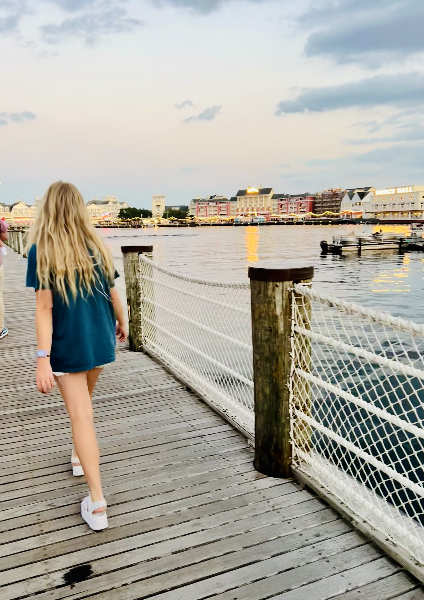

- Overview of Me
I was born and raised in Orem, Utah. I lived in the same house, in the same ward until I was eighteen years old. I grew up hiking in the mountains, skiing in the winter, and boating in the summer. I grew up with amazing members of the church and I am so grateful I did, but I am ready for new experiences and places.I love music. As the youngest of five kids, I never got to pick the music in the car. I heard everything from 2000’s pop to 1950’s rock to 1920’s show tunes and learned to like pretty much all of it. The songs and bands I love the most though, embarrassingly enough, are my boy bands. I love One Direction, The Vamps, The Beach Boys, New Hope Club, 5SOS, The Jonas Brothers, and so many more. Some may consider my love of boy bands to be a problem, but I don’t really care because I love them. Alongside my love for music in general is my love for musicals and concerts. I’ve performed in musicals and vocal showcases before because I love singing, but I love getting to be the one in the audience watching the performance even more than performing. Seeing live performances is one of my favorite pastimes. My friends and I often spend our weekends camping out for front row seats at concerts, and I never turn down an opportunity to go see professional theater.
- Favorite Things
- Traveling
- Tennis
- Hiking
- Boating
- Traveling
- Pirates of the Carribean
- My Adventures
- Cruise to Antarctica
- Study Abroad throughout Europe
- Canada Road Trips
- Living in Florida working for Disney World
- Cruise through the Bahamas
- Road trip across Alaska
- Snorkeling in Hawaii
- Ziplining in Costa Rica
- Touring Buenos Ares
To see where I have been follow this:

Back To Top